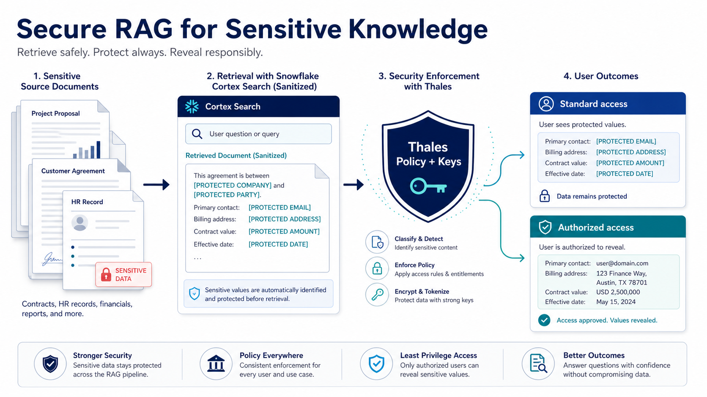

Secure RAG with Snowflake Cortex Search and Thales
Secure RAG for Enterprise Knowledge
Turn internal documents into useful AI knowledge without making sensitive data the cost of innovation.
Enterprise AI is moving from broad, public information to the knowledge that differentiates an organization: policies, contracts, case files, product documentation, and operational records. Retrieval Augmented Generation (RAG) makes that knowledge available to a large language model at the moment a user asks a question. The opportunity is significant, but so is the responsibility. The same documents that make an AI assistant valuable can contain personal information, account numbers, regulated identifiers, or confidential business context.
That is why a strong AI strategy needs both a data strategy and a security strategy. Snowflake Cortex Search and Thales CipherTrust REST Data Protection (CRDP) offer a practical way to bring those disciplines together: make knowledge searchable and useful while limiting the exposure of sensitive values throughout the RAG lifecycle.
You cannot have a good analytics strategy without a good data strategy, and you cannot have a good data strategy without a good security strategy.

Make AI knowledge useful, not broadly exposed
A RAG experience typically retrieves relevant passages from a document collection and passes those passages to an LLM so its answer is grounded in enterprise knowledge. Snowflake Cortex Search provides a managed retrieval layer for this pattern, helping teams search unstructured content and provide relevant context to an application or agent. That eliminates much of the operational work traditionally associated with standing up search infrastructure and maintaining retrieval pipelines.
The business question is not whether documents can be searched. It is whether they can be used with confidence. If raw sensitive information is indexed, retrieved, and presented to an LLM, a successful search experience may also create a new path for overexposure. A secure RAG design treats sensitive data as a first-class governance concern rather than a cleanup task after an AI pilot is already in production.
Protect sensitive values before they become AI context
The central design principle is straightforward: identify sensitive values during ingestion, use Thales CRDP to protect or tokenize them, and build the searchable representation from the sanitized document. The raw source can be handled under a tightly controlled retention process rather than being copied into the RAG corpus by default.
This lowers the amount of usable cleartext that reaches vector search, retrieval results, and LLM prompts. Documents can retain their business context and structure while protected placeholders stand in for high-risk values. Each corpus is different, so teams should validate retrieval relevance and answer quality against representative questions. The goal is not to claim that protection has no impact; it is to reduce exposure while preserving the knowledge that makes the answer useful.
This approach also supports clearer compliance evidence. Organizations can show a repeatable control: sensitive content is identified, protected before indexing, and subject to an explicit retention decision. That is more defensible than relying on a promise that every downstream AI user will handle raw document content correctly.
Deliver the right answer for the user's level of access
Not every user should receive the same version of an AI-generated answer. A standard business user may need the policy guidance, process explanation, or account status while sensitive fields remain protected. A specifically authorized user may have a legitimate need for cleartext as part of an approved workflow.
Thales makes that distinction data-centric. Protection, reveal, and key-management policies can be administered centrally instead of being embedded in every RAG application. Snowflake provides complementary platform access controls for the search service and surrounding data objects. Together, those layers support a role-aware experience: the assistant can return protected results by default and invoke a governed reveal only for approved users and use cases.
This is defense in depth. Snowflake controls who may use the platform and its search services; Thales adds policy-based protection around the sensitive values themselves. One layer does not replace the other. The combination helps limit the impact of a broad query, an overly generous application role, or an unintended copy of retrieved content.
Reduce complexity and speed time to value
Many AI projects slow down because teams must assemble document processing, embeddings, vector infrastructure, retrieval logic, security controls, key management, and audit evidence from separate services. Snowflake Cortex Search simplifies the retrieval side by providing a managed service designed for search over enterprise content. The protection workflow can run in Snowpark Container Services near Snowflake workloads, using CRDP as the policy and protection layer.
That deployment approach can reduce unnecessary external network hops and avoid another standalone runtime for teams to operate. It can also make lifecycle management more consistent with the Snowflake environment. Actual latency, throughput, and cost depend on document size, query volume, region, protection policy, and service sizing, so the solution should be benchmarked with realistic workloads. Still, keeping the workflow close to the data provides a strong operational foundation.
Support sovereignty and long-term trust
For regulated and global organizations, trust also depends on who governs cryptographic keys and protection policy. Thales enables customer-controlled key-management and data-protection policies across cloud, hybrid, and multi-cloud deployment models. This supports organizations that need to demonstrate control over sensitive values while continuing to use Snowflake for modern analytics and AI.
The value is not merely a secure RAG application. It is a reusable pattern for every internal knowledge experience that follows: discover sensitive content, protect it before it becomes AI context, retrieve sanitized knowledge, and reveal only when policy and authorization allow it. Snowflake Cortex Search brings managed retrieval to enterprise knowledge. Thales brings the data protection and key-control layer that helps make that knowledge safe to use at scale.